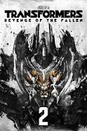

Revenge of The Fallen Transformers
A review written by me.
Transformers 2 Revenge of The Fallen is a movie based on a toy that now transforms into a larger than life Car Computer War Mechine. The Plot ia around 17,000 B.C., The Characters main, The Prime Original AutoBots. Has been stated to have gotten their energy from sun harveters, imagine that?. Machine that destroys stars and their energy. Prime a more righteous approach to the earth situation, vowes to never destroy a star that sustains life. The movie is high powered octain with alot of computer graphics, twist and turns of AI. Very enjoyable with a great cast. Main actors Shia LaBeouf and Megan Fox along with many stars casting voice overs as well as guests apperances, like Tyrese Gibson and Jon Voight play a great roll as the father, Kristen Welker from CNN play a reporter.
Fifty One People took part, Main Screen Apperences- The Transformers Movies will continue to evelve as well as the Toy Car Did
- I loved the great One liners and Military Action
- Director Michael Bay, Written by Ehren Kruger, Roberto Orci and Alex Kurtzman